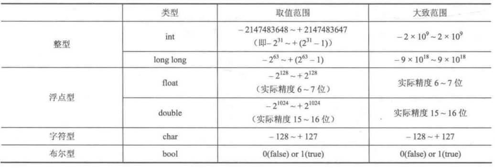
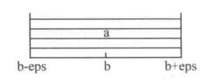
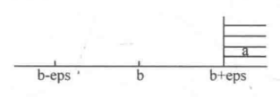
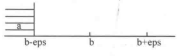
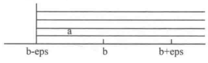
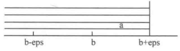
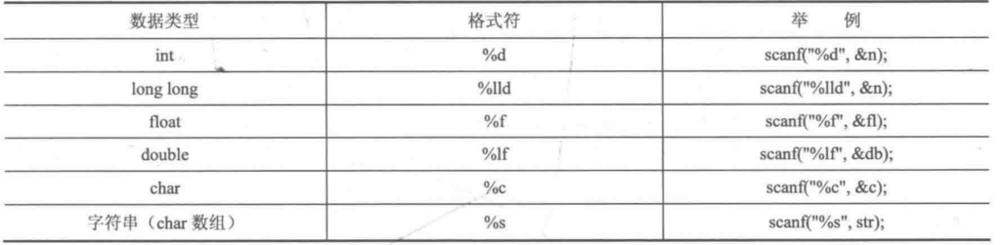
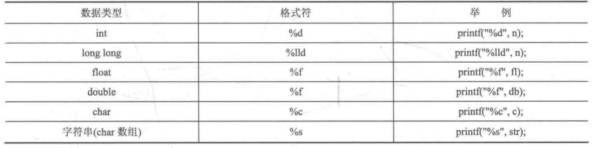

C和C++的常用语法
在算法机试中，最适合使用的就是C语言和C++语言，C++可以向下兼容C，且其基本语法除了输入输出部分，其余顺序结构、循环结构、数组、指针都是几乎一样的。C++中的cin和cout消耗时间比C中的scanf和printf多得多，而C中有一些不太顺手的设定可以使用C++来取代，故我们在机试时通常选择C++的编译器，而混用C和C++的语法来优化算法。本篇简单介绍一下机试中常用的C/C++基本语法。
一、C程序的组成
1 |
|
1.头文件
#include <stdio.h>即是头文件，用来添加程序中需要使用到的库函数，其中stdio.h是标准输入输出库，是一个.h格式的文件，其中包含了一些与输入输出有关的东西，其他功能的库文件还有math.h，负责数学函数,string.h负责字符串相关函数，等等。当我们需要用到这些库函数时就必须将其头文件include起来。此外，C++中的等价写法为#include <csdio>,#include <cmath>,include <cstring>。
2.主函数
1 | int main(){ |
主函数是一个程序的入口，也就是程序开始执行的地方，一个程序最多只能有一个主函数。注意！请不要在同一个程序中使用cout和printf，有时会出问题。
二、基本数据类型
1. 变量的定义
变量类型 变量名;变量类型 变量名 = 初值;
变量名区分大小写。
2. 变量类型

2.1 整型
短整型(short): 2Byte，机试中一般用不到。
整型(int): 4Byte,绝对值在109范围内整数都可以定义为Int型。
长整型(long long): 8Byte,赋值大于231-1的初值，需要在初值后面加上LL，否则编译错误。
2.2 浮点型
单精度(float): 有效精度6-7位。
双精度(double): 有效精度15-16位,因此机试中碰到浮点型一般都是用double来存储。
浮点数在经过容易损失精度得计算后，计算结果总是不精确得，有一定得误差，故需要引入一个极小数eps来修正误差，从而进行各种比较操作，可以取eps为10-8,变量b的浮动范围为[b-eps,b+eps],各种比较操作的宏定义如下：
a==b: a>b: a<b: a>=b: a<=b:
1 |
|
2.3 字符型
字符常量和字符变量:
1 | char c1 = 'z', c2 = 'j', c3 = 117; |
字符常量统一使用ASCII编码，小写字母比大写字母码值大32。0-9（48-57），A-Z（65-90），a-z（97-122）。
转义字符: \n（换行）、\t（Tab）、\0（代表空字符NULL，其ASCII码为0，请注意\0不是空格）
字符串常量:
1 | char str[25]="wo ai de ren ye ai wo"; |
C语言中无基本数据类型可存储字符串常量，只能用字符数组，而C++中有string类型。
2.4 布尔型
1 | bool flag1=0, flag2=true; |
bool在C++中可直接使用，在C中必须添加stdbool.h,但机试选择C++编译器，故可不添加。用整型赋值时true(非零)，false(零)。bool可以%d格式输出0或1。
3. 强制类型转换
1 | (新类型名)变量名; |
其中(int)f直接将小数部分切掉，即向下取整。在赋值时，编译器可以自动进行转换，但在计算过程中需要手动强制类型转换。
4. 符号常量和const常量(宏定义、宏替换)
#define 标识符 常量 :
1 |
const 数据类型 变量名 = 常量; : 推荐方式。
1 | const double pi = 3.14; |
#define 标识符 任何语句或片段 : 不推荐。
1 |
由于宏定义是直接将对应部分替换然后进行编译和运行，故能加括号的地方应添加括号，否则会出现逻辑错误。
5. 运算符
7个常用算术运算符 : + - * / % ++ --+ - * /优先级与四则运算相同， %和/优先级相同，且当/和%的除数为0时会导致程序异常退出或得到错误”1.#INF00”。
6个关系运算符 : < > <= >= == !=
3个逻辑运算符 : && || ！
1个条件运算符(c中唯一的三目运算符) : A ? B : C
6个位运算符 : <<(左移) >>(右移) &(位与) |(位或) ^(位异或) ~(位取反)
运算符的优先级和结合性参见https://zh.cppreference.com/w/c/language/operator_precedence
程序中无穷大的数INF的设置：
1 | const int INF = (1 << 30) - 1; |
或者
1 | const int INF = 0x3fffffff; |
二者等价。
三、顺序结构
1. 赋值表达式
给多个变量赋值，可使用连续等号。
1 | int n, m; |
复合赋值运算符+= -= *= /= %=可以加快编译速度，提高代码可读性，故在程序中经常用到。
2. 使用C语言中的scanf和printf输入/输出
2.1 scanf(“格式控制”,变量地址)
1 | scanf("%d:%d:%d",&hh,&mm,&ss); //输入hh:mm:ss |
scanf函数的格式控制符如下图所示：

格式控制和我们在控制台输入的格式一致。
&为取地址符，char数组名本来就是一个地址，故不需要&。
除了控制符%c可以读入一个空白符(空格、换行、Tab)以外,scanf的其他格式符的输入均以空白符为结束判断标志。
scanf中可以用转义字符，不过一般用不到。
2.2 printf(“格式控制”, 变量名称)
1 | printf("%d",n); |
printf函数的格式控制符如下图所示：

printf中不使用&。
注意double类型变量scanf的格式符为%lf,printf的格式符为%f。
printf中可使用转义字符\n、\t等。
1 | printf("%%"); //输出% |
- 3种实用的输出格式:
%md 使不足m位的int变量以M位右对齐输出，高位空格补齐；若变量本身超过m位则保持原样。
%0md 相比于%md高位补0。
%.mf 使浮点数保留m位小数输出，使用“四舍六入五成双”规则，而不是四舍五入。
C++中的输入与输出函数cin与cout
1 |
|
cin与cout在输入/输出大量数据的情况下表现得非常糟糕，有时题目中数据还没有输入完毕就已经超时，故还是推荐使用scanf与printf输入与输出。
3. 使用getchar和putchar输入/输出字符
getchar用来输入单个字符，注意它能够读入空白符，它经常使用在某些scanf使用不便的场合。putchar用来输出单个字符。
4. 注释
1 | //单行注释 |
编译时会自动跳过注释部分，不执行。
5. typedef
用于给复杂的数据类型起一个别名，用别名代替原来的写法，提高编码效率。
1 | typedef long long LL; |
6. 常用math函数
除了abs在C编译器中需要添加stdlib.h外，其它数学函数使用时需要添加头文件math.h和cmath。注意!
1 | double fabs(double x); // double型变量取绝对值 |
四、选择结构
1. if语句
用于分支条件较少的情况。
1 | if(A){ |
2. switch语句
用于分支条件较多的情况。
1 | switch(表达式){ |
删除break则会从第一个匹配的case开始执行之后的所有语句。
五、循环结构
1. while语句
1 | while(A){ //推荐 |
2. for语句
1 | for(A;B;C){ //注意！C中A位置不允许定义变量而C++可以。 |
3. break和continue语句
break：跳出循环体。continue：跳出当前循环，即continue后面的代码不执行，直接进入下一轮循环。
六、数组
如果数组大小较大（大概106级别），则需要将其定义在主函数外面，否则会使程序异常退出，因为函数内部申请的局部变量来自系统栈，允许申请的空间较小；而函数外部申请的全局变量来自静态存储区，允许申请的空间较大。
数组的长度计算：
1 | int length = sizeof(arr) / sizeof(arr[0]); //数组占内存总空间，除以单个元素占内存空间大小 |
1. 一维数组
1 | 数据类型 数组名[数组大小]; //数组大小必须是整数常量，不可以是变量。 |
初始化：
1 | int a[10]={1,2}; //后面未被初始化的元素将根据编译器内部实现的不同而被赋以不同的初值（可能是很大的随机数），但一般默认为0。 |
2. 二维数组
1 | 数据类型 数组名[第一维大小][第二维大小]; |
初始化：
1 | int a[5][6]={{1,2,3},{},{8,4}}; |
3. 字符数组
- 初始化：注意！定义了数组或字符指针之后，需要做一个初始化，否则里面将是随机值，以后将无法判断改字符串是否为空。
1
2char str[15] = {'G','o','o','d',' ','s','t','o','r','y','!'};
char str[15] = "Good story!"; //直接赋值字符串，注意！仅限于初始化，程序其他位置不允许这样直接赋值整个字符串。1
2
3memset(数组名,‘\0’,sizeof(数组名));
if (strlen(str) == 0) //推荐判空方式
if (str[0] == '\0') /避免使用，容易crash - 输入输出：
1
2
3
4
5
6
7
8
9
10char str[10];
scanf("%c",&str[0]); //%c能读入空白符（空格，TAB，换行），%s以空白符为结束符。
scanf("%s",str);
printf("%s",str);
str[0]=getchar(); //getchar()可以读入空白符。注意！在scanf("%s\n")和gets(str)之间应先使用getchar()吸收掉\n，否则不能读取str,因为gets(str)以\n为结束符。
putchar(str[0]);
gets(str); //gets()以换行符\n为结束符，可以读入空格。PAT OJ中不支持gets()函数。
puts(str); //输出一个字符串并紧跟换行
3. 字符数组的存放方式：
每一个一维数组的末尾都有一个空字符\0，占一位，表示存放的字符串的结尾，puts和printf就是通过识别\0来输出字符串的。故在定义字符数组时长度一定要比实际存储字符串的长度至少多1。\0在使用gets和scanf(“%s”)时会自动添加，其他的输入如getchar()则需要在字符串末尾手动添加\0，否则puts和printf将由于无法识别字符串末尾而输出一大堆乱码。
4. memset——对数组中每一个元素赋相同的值
1 |
|
5. string.h头文件
包含了很多关于字符数组的函数。
1 |
|
6. sscanf与sprintf
处理字符串格式输入输出问题的利器。
1 |
|
sscanf还支持正则表达式，可解决字符串中的复杂问题。
七、函数
1. 函数定义
1 | 返回类型 函数名称(参数类型 参数){ |
2. 以数组作为函数参数
1 | void func(int a[], int b[][5]); //第一维度可不写长度，第二维度需要写明长度，可以再函数内部修改实参数组中的元素的值。 |
注意！数组可以作为函数的参数却不允许作为函数返回值，若想返回数组只有将返回的数组作为参数传入。函数可以嵌套调用，也可以递归调用。
八、指针
C语言中用指针来表示内存地址，它是一个unsigned类型的整数，若这个内存地址恰好是某个变量的地址，则称这个指针指向该变量，变量的地址一般指它占用的字节中第一个字节的地址。在变量前加上取地址运算符&即可得到变量的地址。
1. 指针变量
指针变量用来存放指针。
1 | //定义和初始化 |
注意！若指针不进行初始化则指向的地址是随机的，而且很可能随机指向系统工作区，那么就会出错。
2. 使用指针变量作为函数参数
使用指针变量作为函数参数时，在函数内部对指针变量(形参)本身进行修改并不能使传入的指针变量(实参)改变，因为传入的指针变量相当于传入一个副本，能够使实参改变的只能是该函数中对指针指向的数据进行的修改。
1 | void swap(int* m, int* n){ |
3. 引用
引用(&，区分取地址符)可以不使用指针，也能达到修改传入参数的目的，且引用不产生副本，而是给原变量(而不是常量，常量不可使用引用)起了个别名，故旧名字与新名字指向同一个东西，对引用变量的操作就是对原变量的操作。
1 | void func(int &x); |
指针的引用：通过将指针的引用作为形参，从而达到将传入的地址交换以交换两个变量的结果。
1 | void swap(int* &m, int* &n){ |
九、结构体(struct)的使用
需要将一些相关的变量放在一起存储时，需要用到结构体。
1 | struct Name { |
1. 结构体的定义
1 | struct StudentInfo { |
2. 访问结构体内的元素
1 | stu[0].id; |
3. 结构体的初始化和赋值
结构体使用构造函数来进行初始化，对于一个普通定义的结构体，其内部会生成一个默认构造函数(但不可见)，如studentInfo(){}，正是由于默认构造函数的存在才可以直接定义结构体变量而不进行初始化，因为它没有让用户提供任何初始化参数。
1 | struct StudentInfo{ |
注意！若自定义了构造函数而不想进行初始化，则需要手动添加默认构造函数。只要参数和类型不完全相同，就可以定义任意多个构造函数，以适应不同的初始化场合。
4. 共用体
共用体可定义在结构体内部，用于建立有不同类型数据组成的组合型的数据结构。原则上，共用体的大小取决于占据最多内存的成员的长度，但会受到最宽基本类型成员大小的影响。即:共用体的总大小为共用体最宽基本类型成员大小的整数倍，如有需要编译器会在最末一个成员之后加上填充字节（trailing padding）。
1 | union MyUnion |